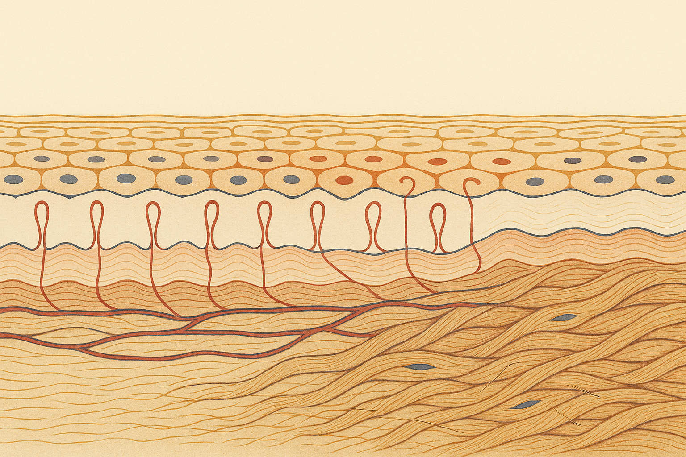
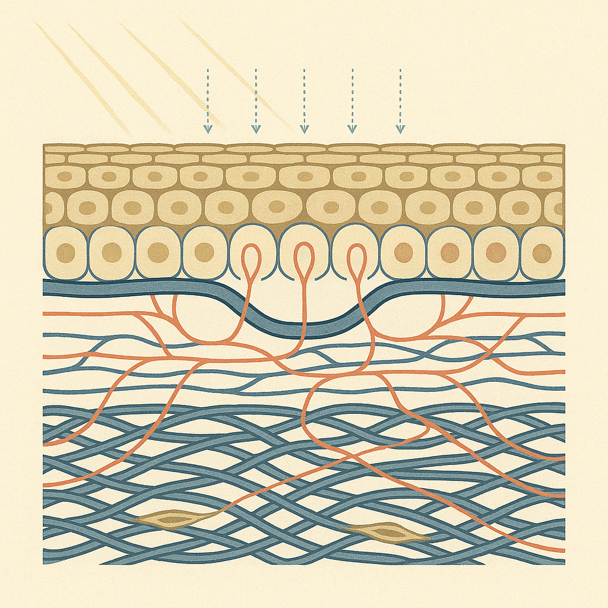
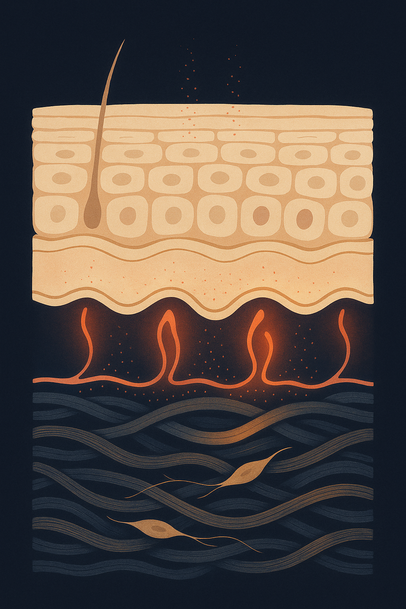

Review below. Reply approve to publish the Facebook post, or tell me edits.

Some mornings your skin looks great. Same face, same routine, same bathroom light, and on Tuesday it has depth and colour and on Thursday it looks flat and tired. Nothing changed. You did not use up your good skin.
That swing is real. It is also not collagen. Collagen cannot move that fast. Whatever happened between Tuesday and Thursday belongs to a system that runs on a completely different timescale, and once you can tell the two systems apart, a lot of confusion about skincare quietly resolves itself.
Think of two clocks on the same wall. One has a second hand you can watch move. The other has an hour hand you can only judge by leaving the room and coming back later. Skin runs on both.
Glow is a circulation word.
The dermis carries blood in two organised layers. Deeper down sits an arteriolar plexus, a horizontal network at the border with the fat. From it, vessels rise to a second network, the subpapillary plexus, sitting just below the surface. From that upper plexus, a single hairpin capillary loop rises into each dermal papilla, the little finger of dermis that pushes up into the underside of the epidermis. One loop, one papilla, arranged across the whole face.
The epidermis itself has no blood supply at all. Not one vessel. Everything it needs crosses the basement membrane by diffusion from those loops.
Which means what we read as glow is largely optical. Light entering skin is absorbed by haemoglobin in those capillary loops, and oxygenated and deoxygenated haemoglobin absorb differently. How full those loops are, and how oxygenated the blood in them is, changes the colour and the translucency your eye reads back. Braverman's anatomy of the cutaneous microcirculation describes that architecture; Stamatas and Kollias showed that blood in the skin measurably shifts perceived colour, to the point that blood stasis alone changes how pigmented skin appears.
So glow is perfusion. It is blood, not structure. And blood moves in minutes.
Minutes to days. This clock has a second hand, and almost everything in ordinary life pushes it.
Warmth dilates surface vessels, which is why skin looks better straight out of a hot shower or after ten minutes in the sun. Sleep does it too, partly because lying flat redistributes fluid and partly because blood flow to skin shifts overnight. Aerobic movement raises cardiac output and opens the periphery. Hydration keeps plasma volume where it should be.
The other direction is just as fast. Stress and cortisol drive vasoconstriction, which is where the drained, slightly grey look on a bad week comes from. Cold air and wind constrict surface vessels. Nicotine is a vasoconstrictor, and smoking narrows exactly the vessels this whole effect depends on. Sitting still for nine hours does no favours to peripheral circulation. Alcohol gives you a short flush and then takes it back with a worse night's sleep and a duller face the next morning. A salty dinner or four hours of sleep will dull the surface by breakfast.
Everyone already knows this without naming it. The same skin photographs differently at 7am and 5pm. Nothing structural changed in ten hours. The blood did.
The second clock has no second hand.
Collagen and elastin are not switched on and off. They are remodelled: existing fibres broken down, new ones synthesised by fibroblasts and organised into the mesh that gives dermal density and the way skin holds light. That process runs at the pace of fibroblast synthesis and matrix turnover, which is measured in weeks and months, not days. Texture and dermal density belong to this clock. So does the look of fine lines, which is really a question of what is supporting the surface from underneath.
This is why a product judged at day 10 has only ever been judged on the fast clock. Ten days is not enough time for anything structural to have happened. Whatever you saw was circulation.
It is also the honest frame for skin longevity. The point of a maintenance habit is not an event, it is holding the structure you have for longer. Slow clocks reward attendance, not intensity.
Here is the practical payload: separate the two signals and read each one for what it can actually tell you.
Fast-clock change is colour, translucency, puffiness, a good skin day. It tells you something useful about your sleep, your hydration, your stress and your circulation. It tells you nothing about whether a product is working.
Slow-clock change is texture, the look of fine lines, and how your skin holds light across a whole month rather than one flattering morning. That is the only honest read on a routine.
So judge on the fast clock daily if you enjoy it, but never make a buying decision on it. Give anything structural a 12-week horizon. Photograph in the same light at the same time of day, ideally morning, and compare month to month instead of day to day.
Your Thursday face is not evidence.
And this cuts both ways. A great deal of the "instant results" language in this category is simply the fast clock being sold as the slow one. Warmth, massage, a humectant plumping the surface, a flush of circulation: all real, all visible in twenty minutes, none of it structural.
Light therapy at home belongs with the slow-clock habits, and the timeline people commonly report follows the same split: a look of improved tone and glow somewhere around 7 to 10 days (fast clock, largely how skin is carrying light and blood), and any change in the appearance of fine lines only at the 4 to 8 week mark. Treat both as a sensible expectation rather than a measured result. Ten minutes a day, done most days, is the entire mechanism of a slow-clock habit. It compounds or it does nothing. It is a cosmetic device, not medicine, and it should be judged like every other maintenance habit: over months.
Two clocks. Watch the fast one for fun. Judge on the slow one.

Your skin can look better on Tuesday and flat on Thursday. Nothing changed in between.
That swing is real, and it is not collagen.
Your epidermis has no blood supply of its own. It is fed by diffusion from below, where a single hairpin capillary loop rises into each tiny dermal papilla. How full and how oxygenated those loops are changes how skin absorbs and returns light, which is most of what we call glow. Minutes, not months.
So the fast clock moves with sleep and lying flat, warmth, a walk, cold wind, stress, nine hours in a chair, a late night.
Structural change is a different clock entirely. Texture, dermal density, the look of fine lines: that is remodelling, and it runs on weeks to months. Anyone judging a routine at day 10 is measuring circulation and calling it results.
Think of a room. You can change the lighting in a second and it looks like a different room. Changing the furniture takes a weekend, and the furniture is what you actually live with.
The useful takeaway: use the fast clock to understand your day, never to judge a product. Same light, same time of day, month to month.
Light therapy sits on the slow clock, ten minutes a day, and the timeline people commonly report follows the same split: tone and glow around 7 to 10 days, the appearance of fine lines closer to 4 to 8 weeks. Treat both as a sensible expectation rather than a measured result. It is a cosmetic device, not medicine.
So which do you catch yourself doing: judging a serum after three days, or actually giving it eight weeks?
**CTA:** If you want a closer look, ours is $129 as an introductory price, face and neck together, ten minutes a day: https://redermis.com.au/products/red-light-therapy-face-neck-mask
**Hashtags:** #skinscience #redlighttherapy #skinlongevity #skincareaustralia

Your skin looks better on Tuesday and flat on Thursday. Nothing changed.
Glow is a circulation word.
Your epidermis has no blood supply of its own. It is fed by diffusion from a single hairpin capillary loop sitting in each dermal papilla just underneath.
How full those loops are, and how oxygenated, changes how your skin carries light.
That shifts in minutes. Sleep. Warmth. A walk. Stress. Cold air. A late night.
That is the fast clock.
Texture, density and the look of fine lines run on a different one. Weeks to months.
So a good skin day tells you something real about your circulation. It does not tell you whether anything in your routine is actually working.
Judge that month to month. Same light, same time of day, same angle.
Light therapy belongs to the slow set. Ten minutes a day, with tone and glow often reported at around 7 to 10 days and the look of fine lines closer to 4 to 8 weeks.
It is a cosmetic device, not medicine.
Save this for the next time you judge a product on day three.
**CTA:** If you want a closer look, ours is $129 as an introductory price, face and neck together. Link in bio.
**Hashtags:** #skinscience #redlighttherapy #collagen #glow #skincareroutine #ledmask #ledfacemask #skinlongevity #australianskincare #skincaretips
**Title:** Red light therapy at home: glow in days, firmness in weeks
**Description:** Skin runs on two clocks. Your epidermis has no blood supply of its own: it is fed by capillary loops just beneath it, so early glow is blood flow, not structure, and it shifts with sleep, warmth, stress and a late night. The slow clock is structural: collagen remodels over weeks, and a change in the look of fine lines is commonly reported closer to the 4 to 8 week mark. So judge structure month to month, same light, same time of day. Cosmetic device, not medicine.
**CTA:** If you want a closer look, it is here: https://redermis.com.au/products/red-light-therapy-face-neck-mask
**Pin link:** the blog article, "Does red light therapy work? Why skin glows in days but firms in weeks".
**Hashtags:** #RedLightTherapy #SkincareRoutine #SkinLongevity #AtHomeSkincare #SkinScience
**Image:** reuses the Instagram image (instagram.png), generated at 1024x1536 (2:3 vertical), which is Pinterest's native vertical ratio. No separate Pinterest image is generated.